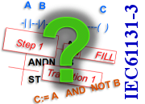
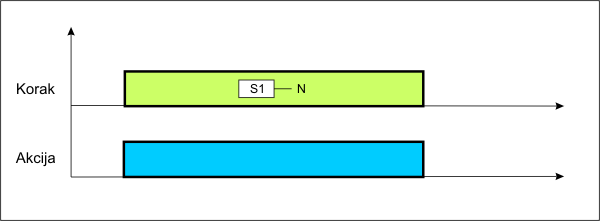
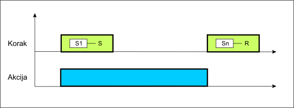
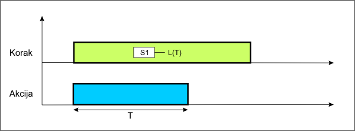
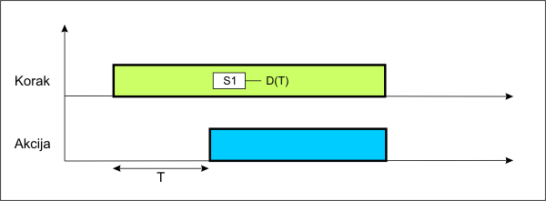
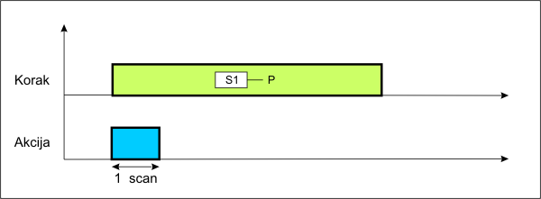
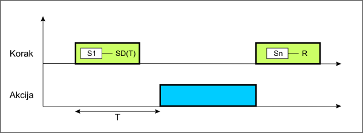

Današnja industrijska postrojenja uglavnom su upravljanja procesnim računalima koje se nazivaju Programljivi Logički Kontroleri ili skraćeno PLC-i. Više od 25 godina nakon uvođenja prvi PLC-a, na ovom tržištu još uvijek nije bilo međunarodnog standard sličanom onom za PC računala do definiranja IEC 61131 standarda. Mnogi proizvođači koriste svoj dijalekt uvriježenih programskih jezika a napisani softver se koristi samo na tim kontrolerima. Time je implementacije sklopovske opreme različitih proizvođača u jedinstven sustav upravljanja vrlo složen posao, a samim tim, i vrlo skup. Stoga je za mnoge neshvatljivo da je trebalo više od 25 godina da se stvore zahtjevi za zajedničku programsku platformu kao što je standard IEC 61131-3. Prije pojave IEC61131-3 standarda teorijski nije bilo moguće koristiti program napisan za određeni PLC na nekom drugom PLC-u (portanje). Nažalost veliki stupanj prenosivosti (portabilnosti) softvera bit će teško ostvariti i sada jer standard samo definira specifikacije a od proizvođača se traži da on sam napravi spisak podržanih karakteristika.
{kind=link}
Osnove standarda
Nekoliko većih kompanija koje se bave razvojem prenosivog (portabilnog) softverom za programiranje SoftPLC-a su formirali PLCopen Trade Association. PLCOpen je svjetska vendor i product neovisna udruga koja podržava IEC61131-3 normu. Osnovana je 1992 u Nizozemskoj a danas ima svoje urede u Kanadi i Japanu. Organizacija informira korisnike i programere o standardu preko internetske stranice www.plcopen.org, besplatnim kvartalnim novostima te organizira konferencije po sajmovima. PLCOpen definira tri različita compliance classes o prenosivosti kontrolnog sustava softvera.
- Bazna razina (Base Level ) definira samo jezgru standarda (core kernal) pa, iako je ograničena, moguće je razvijati aplikacije na temelju nje. Ona ustvari samo pokazuje opredijeljenost proizvođača k standardu.
- Razina prenosivost (Portability Level ) sadrži veliki skup značajki, uključujući korisnički definiranih funkcija i funkcija bloka. Ova razina zahtijeva da sustav ima opciju izvoz / uvoz za jednostavnu razmjenu programskog koda između sustava različitih proizvođača
- Najviša razina, potpuna usklađenost (Full Compliance), nudi razmjenu potpune aplikacije, uključujući i konfiguracijskih informacija, između različitih sustava kontrole
Po standardu svi programi trebaju se rastaviti na funkcionalne elemente, programske organizacione jedinice (POU). Jedna POU sadrži funkcije, funkcijske blokove ili programe. Ako je moguče treba izvršavati pojedine dijelove aplikacijskog programa razlčitom dinamikom u smislu da sustav treba podržavati individualne vremenske intervale za različite POU (Time Scheduling)
Programski jezici
Pisanja programa treba biti moguće u svim programskim jezicima koje definiran IEC61131 norma a to su:
- Instruction List (IL)- lista instrukcija grupiranih u korake programa koja uvelike podsječa na programiranje u asembleru
- Structured Text (ST) – struktuirani tekst je standardni programski jezik više razine nalik na Pascal
- Function Block Diagram (FBD) – funkcijski blok dijagram izgledom podsjeća na električne sheme digitalnih sklopova
- Ladder Diagram (LD) – Ljestvičasti dijagram koji je prvi program za programiranje u sustavima automatizacije a izgledom oponaša električne sheme spajanja
- Sequential Function Chart (SFC) – sekvencijalni funkcijski dijagram izgledom podsjeća na dijagrame tijeka a posebno je prihvatljiv za brzo i pregledno programiranje sekvencijalnih procesa
Sekvencijalni funkcijski diagram – SFC
Jedan od zahtjeva standarda je da složena sekvencijalna događanja treba razložiti na događaje (events) s konciznim grafičkim jezikom a to se postiže upravo s SFC-om. U biti SFC nije programski jezik nego prezentacijski okvir sekvencijalne strukture koji objedinjuje programske algoritme napisane u ostalim jezicima. SFC programski jezik razlikuje dvije osnovna elementa grafikona a to su korak (step) i prijelaz ili tranzicija (transition). Koraci se predstavljaju četverokutima a povezani su okomitim linijama koje označavaju vremenski tijek. Svaki korak ima jedinstveni naziv a povezuje se (asocira) s jednom ili više akcija. Akcija može biti jednostavna binarna naredba ili , što je češći slučaj, poziv funkcije ili POU. POU može ravnopravno biti pisana u jednom od ostala 4 normirana programska jezika. Prijelaz iz jednog u drugi korak moguć je kad je ispunjen uslov prijelaza koji se grafički prezentira kao vodoravna linija. To je binarna varijabla koja se automatski generira a na nju je moguće djelovati u bilo kojem dijelu programa.
Primjer jednog jednostavnog SFC programa imamo na slici. Program započinje inicijalnim korakom S0 uz koji nij asocirana nikakva akcija.Izvršavanje programa iz koraka u korak uslovljeno je prijelazima Tr1, Tr2, Tr3, Tr4 i Tr5. Zadovoljavajući ove uslove aktiviraju se redom korak S0 do S4. Kada je aktivan korak S1 on izvršava binarnu komandu SET nad varijablom Var1. Slijedći korak S2 poziva programsku organizacionu jedinicu POU1 koja se izvršava samo dok je taj korak aktivan. Nakon prelaska na korak S3 resetira se varijabla Var1 i ako je uslov Tr3 ispunjen aktivira se korak S4. Ovaj korak poziva program POU2 ali s odgodom od 10 vremenskih jedinica. Konačno, ispunjavanjem uslova Tr5 zatvara se petlja a izvršavanje tijeka programa se vrača na početak.
{kind=link}
Kvalifikacije za akciju
Izvršavanje pojednačnog koraka poziva se akcija koje je asocirana uz njega a karakteristika akcije definira se kvalifikacijama akcije (Action Qualifiers). To su slovčane oznake koje definiraju način aktiviranja i trajanja asociranog programskog segmeta ili POU.
- N (Non-Stored)
Akcija se izvršavao onoliko dugo koliko traje korak (step).
 - S (Set)
Akcija se pokreče početkom koraka koji je asociran sa S a prekida se početkom koraka koji je asociran s R.
 - R (Overiding Reset)
Akcije koje su pokrenute s S, SD, DS, i SL prekidaju se početkom koraka asociranom s R. - L (Time Limited)
Akcija se pokreče početkom koraka asociranim s L a trajanje je limitirano parametrom T čija vrijednost mora biti manji od trajanja samog koraka.
 - D (Time Delayed)
Akcija se pokreče nakon isteka definiranog vremena T (odgoda uklapanja) a traje do kraja trajanja koraka.
 - P (Pulse)
Akcija traje samo jedan scan ciklus unutar trajanja koraka.
 - SD (Stored & Time Delayed)
Akcija se pokreče nakon isteka vremena T od početka koraka s kojim je asocirana a traje do početka koraka asociranog s R.
 - SL(Stored & Time Limited)
Akcija se pokreče početkom koraka, trajanje joj je definirano parametrom T koji može biti veći od trajanja koraka. Akcija se može prekinuti početkom koraka koji je asociran s R
{kind=link}
{kind=link}
{kind=link}
{kind=link}
{kind=link}
{kind=link}
{kind=link}
Grananja tijeka
Standardni tijek izvršavanja SFC programa je jednostruka petlja ali ona ne može zadovoljiti sve potrebe procesnih algoritama. Često nam je potrebno da se istovremeno izvršavaju nekoliko programskih akcija ili da se neke od njih uslovno pokreču. U tim slučajevima koristimo grananje tijeka u SFC dijagramu a postoje dva osnovana tipa grananja:
- Uslovno grananje kod kojega se prijelaz na slijedeći korak ostvaruje kada se ispune uslovi paralelno postavljenih prijelaza. Na slici je jedan primjer uslovnog grananja kojega ću pokušati pojasniti. Nakon inicijalnog koraka S0 i zadovoljenja uslova Tr1 prelazi se na korak S1. Iz toga koraka je moguće prijeći na korake S2 i S3 i to na način da se ostvare uslovi Tr2 ili Tr3. Ovi uslovu su obično komplementarni odnosno možemo reči da je to programska struktura IF THEN ELSE . Dakle ako je uspunjen uslov Tr2 prelazi se u granu S2-S4 koja se potom izvršava. Ispunjenjem uslova Tr6 ponovno se vračamo na glavni tijek. Ekvivalentna je priča i s granom S2. Postavlja se pitanje što će se dogoditi ako su nakon koraka S1 oba uslova Tr2 i Tr3 zadovoljena. U tom slučaju program se izvršava u obje grane ali je trajanje determinirano uslovima u grani dijagrama koja je NA LIJEVOJ strani. U našem slučaju nakon koraka S1 izvršavati će se koraci S2-S4 te S3 istovremeno ali u slučaju da se uslov Tr5 zadovolji prije uslova Tr6 program se neće prebaciti na glavni tijek. Isto tako kada se ostvare uslovi Tr4 i Tr6 bezuvjetno će se prekinut izvršavanje koraka S3 i i izvršavanje će se vratiti na glavni tijek.
{kind=link}
- Paralelno grananje kod kojega se bezuslovno ulazi u izvršavanje paralelnih grana dijagrama. U našem primjeru nako zadovoljenja uslova Tr2 prekida se izvršavanje koraka S1 te se simultano započinje s izvršavanjem koraka S2 i S4 u lijevoj grani te koraka S3 u desnoj grani. Kada obje grane dođu do kraja, u našem slučaju kada se izvršavanju koraci S3 i S4 ispituje se uslov Tr4. Kada se uslov zadovolji prekida se izvršavanje koraka S3 i S4, započinje izvršavanje koraka S5 i program se vrača u glavni tijek.
{kind=link}
Koristeći se ovdje navedenim pravilima i njihovim kombiniranjem možemo napraviti vrlo efikasni sekvencijalni dijagram našega procesa. Zahvaljujući tome što koristimo grafičke elemente kojim definiramo strukture našeg programa mi zapravo već u fazi programiranja procesnog algoritma gradimo rudimentarnu dokumentaciju koja nam olakšava testiranje programa u fazi puštanja u pogon . Isto tako dobro definiran dijagram omogućava efikasno razvijanje i nadogradnju našeg programa od strane drugih programera te razvoj programa u timovima.